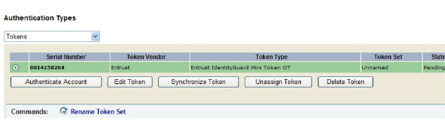

|
IdentityGuard Server 13.0 Administration Guide |
|
IdentityGuard Server 13.0 Administration Guide |
You can view information about assigned tokens by first finding a user (or users) and then viewing their tokens, or by finding the token or tokens in the assigned tokens list.
Topics in this section:
● To find a user’s token information
● To search for assigned token information
To find a user’s token information
1. Log in to the Entrust IdentityGuard Administration interface as the administrator.
 On the
Windows computer where Entrust IdentityGuard is installed
On the
Windows computer where Entrust IdentityGuard is installed
2. Click User Accounts on the menu bar.
3. Find a specific user in one of two ways:
● use the Go To Account tab (see Search for information about a specific user)
● use the Find Accounts tab (see Searching for user information)
The View Account page appears.
4. Under Authentication Types on the user’s Account Information pane, click Tokens.
Token information and applicable command buttons appear.

5. If the user has more than one token, select the token of interest to see read-only token details.
From this page, you can also perform a number of actions on the selected token:
● Authenticate the user account. See Authenticate a user with a token.
● Edit token information. See Edit token information .
● Activate the token. This button might not be available, depending on the token type.
● Synchronize a token to fix problems with event or clock drift. See Configure the drift window and fix token drift.
● Move the token back to the list of unassigned tokens. See Unassign an assigned token.
● Unlock the token, if the token supports locking. See Unlock a PIN-protected token.
● Delete the token. See Delete a token.
● Rename the token set. See Create or rename a token set.
To search for assigned token information
Note: For a count
of the number of unassigned tokens, use one of the following methods:
- Run an unassigned token report. See To
create reports in the Administration interface.
- Open the Master user shell (see Using
the Master user shell), and enter: token
list -countOnly
6. Log in to the Entrust IdentityGuard Administration interface as the administrator.
On the
Windows computer where Entrust IdentityGuard is installed
2. Click Tokens from the menu bar.
3. From the Tokens page, click the List Assigned Tokens tab.
4. Retrieve a list of assigned tokens.
Use the following options to reduce the search results to those that match selected characteristics:
● Serial Number — To locate a particular token, enter the serial number of the token. You can also use the wildcard character (*). To retrieve all serial numbers, leave this field empty.
Note: When you
enter a token serial number, any number with less then 10 digits is prefixed
with zeros. For example, 7891234 becomes 0007891234. Any hyphens
used as punctuation are removed. For example, 7644483-8 becomes 0076444838.
An exception to these rules is if you use the wildcard character to find
serial numbers. For example, to find serial numbers that start with 007,
enter 007* not 7*.
● Token vendor — To locate tokens from a specific token vendor, select the vendor from the list. Default options include: Entrust, Entrust Soft Token, and OATH Token.
If you have configured additional token vendors, they appear in this list. For more information, see Configuring token vendors.
● States Include — To locate tokens that are in a specific state, select the state from the list. Hold down the Ctrl key to select more than one state. For more information about token states, see Grid card and token state overview.
● States Don’t Include — To locate tokens belonging to users who have no tokens in a specific state, select the state from the list. Hold down the Ctrl key to select more than one state.
● Token Added — To locate tokens that were added to the IdentityGuard service within a specified time frame (1, 7, 30, or 365 days), select one of the ranges in the drop-down list.
Or select Custom date range and pick a From and To date. Use the drop-down lists to select the date, month, and year, or click the calendar icon to select the date.
● Last Used — To locate tokens that were used within a specific time frame (1, 7, 30, or 365 days), select one of the ranges in the drop-down list.
Or select Custom date range and pick a From and To date. Use the drop-down lists to select the date, month, and year, or click the calendar icon to select the date. To find unused tokens only, include just the To date without the From date.
If a token has never been used, it has no last-used date and appears as the earliest token in the search results when you search using a time frame. It does not appear in the search results if you search using a date range.
● Uses License — Select Yes to search for tokens that use a Soft Token license, or No to find soft tokens that do not use this license.
● Uses Transaction Verification License — Select Yes to search for soft tokens that are licensed to use transaction verification (or push authentication) or No to find soft tokens that do not use this license.
● Uses Facial Recognition License — Select Yes to search for mobile soft tokens that are licensed to use the facial recognition feature to open the app or No to find soft tokens that do not use this license.
● User Account — Select this option to provide related details about token users.
The Token owner account characteristics pane provides an extensive list of user characteristics to use in your search. For complete details, see Searching for user information.
5. (Optional) From the Showing results per page drop-down list, specify the number of search results per page.
6. Select Search.
The Search Results page appears.
7. Click a token serial number.
The Token Details page appears. From this page, you can perform other token administration actions.